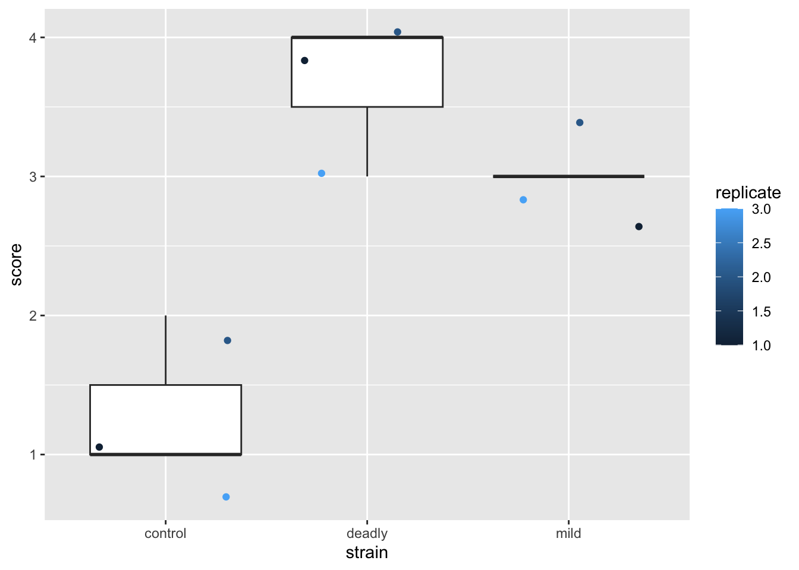
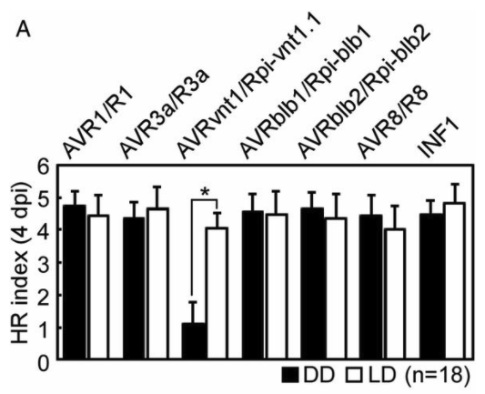
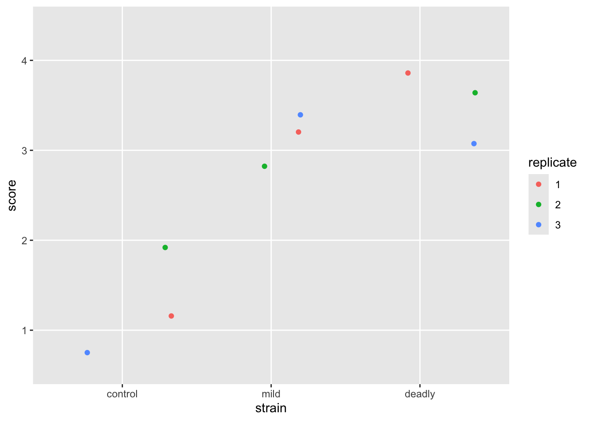
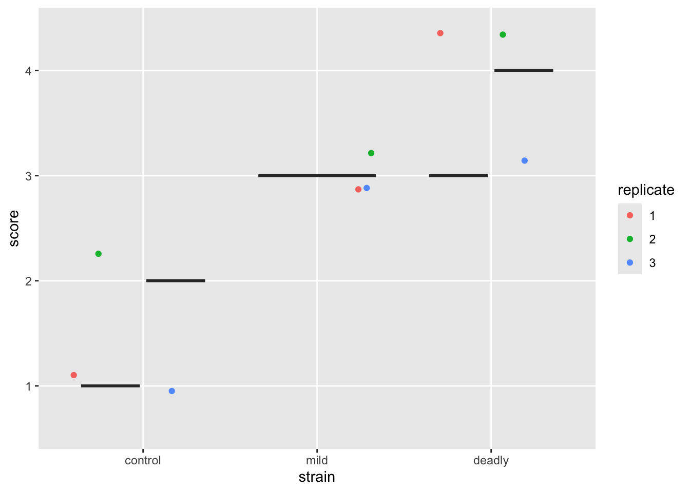
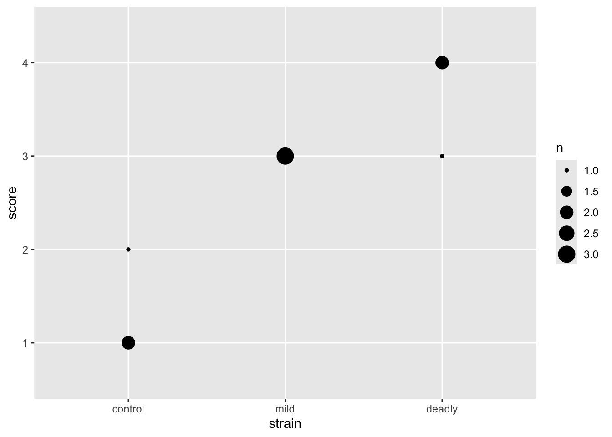

library(itssl)
its_hr_score_scheme_time()| severity | score |
|---|---|
| Dead | 4 |
| Very Ill | 3 |
| Ill | 2 |
| No Effect | 1 |
So far we’ve looked at tests where the dependent or response measurement has been continuous, that is a measurable number on a continuous scale, like mass or fluorescence. In this section we’ll look at how straight lines can be used to understand differences when we have a discrete or categorical response output. A discrete response variable is one where we have certain categories of result, ‘tall’ or ‘short’, ‘dead’ or ‘alive’ or ‘infected’ or ‘not’. You’ll likely be familiar with these approaches from such things as the chi-squared (\(\chi^2\)) test or other so-called ‘non-parametric’ test like the Mann-Whitney.
We’ll start by looking at how these data really are different from the data we’ve used already, common mistakes are always enlightening.
A common place where analysing discrete data goes wrong is when the analyst confuses the categoric with the continuous, this is often caused by a bad naming scheme as much as a lack of appreciation of the real nature of the data. Often, using numbers as the names for categories can lead the unaware analyst to make a critical mistake. Let’s consider a plant infection assay (sometimes called an HR assay). Here a large-ish leaf of a plant is infected at points on its surface with either different strains or varieties of some pathogen and controls. After a period of incubation the severity of disease at each patch is assessed by eye and a score of disease applied. Sometimes that score will be a numeric one that may be like this example from Supplemental Figure 1 A in a 2020 PNAS paper by Gao et al. Gao et al. (2020)
 In the figure we can see that a number has been attached to a category, roughly an amount of disease. The numbers increase as disease does but it is a very rough and therefore discontinuous fit. The change in size in numbers don’t relate to each other in the same way that the changes in disease do. The unit difference from 0 to 1 doesn’t seem to be copied in any of the other units and 5 doesnt have just 5 times more apparent disease than 1. The scale has numbers in it, but it isn’t continuous.
In the figure we can see that a number has been attached to a category, roughly an amount of disease. The numbers increase as disease does but it is a very rough and therefore discontinuous fit. The change in size in numbers don’t relate to each other in the same way that the changes in disease do. The unit difference from 0 to 1 doesn’t seem to be copied in any of the other units and 5 doesnt have just 5 times more apparent disease than 1. The scale has numbers in it, but it isn’t continuous.
We can see what the scale represents if we try and use words to express the categories.
library(itssl)
its_hr_score_scheme_time()| severity | score |
|---|---|
| Dead | 4 |
| Very Ill | 3 |
| Ill | 2 |
| No Effect | 1 |
Which looks fine at first glance, but again isn’t continuous.
Typically this will be used in a replicated infection experiment and give data that look like this when collected, which is where the problem arises.
scores <- its_hr_scores_time()
scores %>% its_table_time()| strain | replicate | score |
|---|---|---|
| control | 1 | 1 |
| mild | 1 | 3 |
| deadly | 1 | 4 |
| control | 2 | 2 |
| mild | 2 | 3 |
| deadly | 2 | 4 |
| control | 3 | 1 |
| mild | 3 | 3 |
| deadly | 3 | 3 |
We now have a table that looks to computers and humans alike as if it is full of numbers, which it isn’t, its full of numbers in the place of words. A simple mental test is to try and use the categories as numbers and see if they behave. For example, is a score of ‘2’ twice that of ‘1’, in this case, is ‘Ill’ twice the effect of ‘No Effect’? Clearly it isn’t, confirming that these numbers aren’t continuous numbers at all, merely place holders for some other conception of the severity of the disease.
The problem is exacerbated by not paying attention to this and jumping straight to a plot. Consider this:
library(ggplot2)
scores %>% ggplot() +
aes(strain, score) +
geom_jitter(aes(colour = replicate))Looks good?
No. By the sweet warmth of the first suns of spring, no.
These data are misrepresented by this plot. There are some alarm bells that should ring when we look at this. The first is that scale for replicate. The scale shows replicate values like 1.5 and 2.5 - we didn’t do a replicate 1.5 (not least because it doesn’t make sense to do a replicate .5). So why has ggplot drawn that scale - because it saw numbers and assumed the data in this column are continuous and not discrete. This needs fixing, the replicate is a category, really, not a number. We wouldn’t lose any meaning if we used A,B,C or one,two,three and while the computer is good at recognising text as categories, it just thinks the numbers are real numbers. So we’ll need to avoid doing this, or be prepared to correct it.
By using numbers for our score, then we have been able to use ‘geom_jitter()’ as a representation and it has generated additions to the scores that leave it with decimal points and that isn’t correct either. It seems defensible on the grounds that if we didn’t use geom_jitter() all the points would be in one place but to avoid the problem we should be doing something very different in the first place.
The next level of mistake that follows from believing that the scores are numbers is treating them like numbers. We often see the plot evolve in this manner
scores %>% ggplot() +
aes(strain, score) +
geom_boxplot() +
geom_jitter(aes(colour = replicate))
What the cuss? This is a dreadful misrepresentation of the data!
This plot makes us see things that aren’t really there - particularly statistics like means and ranges, and relative magnitude differences between categories.
Well, not you specifically, but someone. Someone definitely thinks what I think they think it means because this overloaded mistake keeps coming up.
We think we can see in this plot statistics like means and ranges and infer differences because the boxplot shows them. But the boxplot itself is a dreamlike fabrication. The things it purports to show like the mean of the data, its interquartile range etc are each a numeric feature calculated using formulae based on numbers. But these data are not numbers - they are category names that happen to have digits to represent them. We’ve squeezed numbers in where no numbers should be and invented statistical lies.
The use of numbers as names for the categories created a problem of mental overloading - simultaneaously knowing that the data are categorical and treating them as continuous. Believing that because we’ve used numbers for categories we can treat them as numbers. On top of this the presentation tricks our mind into considering the results as if these statistics were real.
If we use the actual category names we see how ridiculous the boxplot is - consider mean(Ill, No Effect, Ill) = 0.66, it doesn’t make any sense. By using numbers as proxies for our categories, we’ve confused the issue and the knock-on effect is that we start to read (conciously or unconciously) things we shouldn’t from the plot. One unavoidable impression from the plot is that ‘mild’ strain is somehow about 3/4 of the badness of the ‘deadly’ strain. Does that mean the plants were three-quarters dead? Of course not. The misrepresentation in these plots leaves with bad intuition about the relationships in our data.
The use of boxplots to show categories is seductive, it gives an impression of transparency and apparent differences when we use numbers, this is a case where the road to hell is paved with good intentions.
With these plots as a base the analysts next move is to run statistical analysis in the way we have learned and, sadly, generate results that are worse than meaningless.
And indeed this does happen in published results, see this figure from the same Gao et al. (2020) paper .
 A barchart with all the errors we mentioned, the bars represent means, the error bars represent standard errors and the legend reports an ANOVA done on these data that concludes a significant reduction in the one low sample.
We must avoid these category confusions. There are some key places we can do this in our analysis workflow
When we load our data into R, we’ll need to make sure that we use the right data types. As a result of this we’ll find that the plots we try to make will come out more appropriately - R will adapt to the data as far as it can. Second, when it comes to doing hypothesis tests we will have to use the proper test for the data type. As we are using the linear model as the basis for our interpretations we’ll need to learn the adaptations to that.
In the rest of this chapter we’ll look at correctly describing data to R, creating an appropriate plot for some data and then back to our main thread - using the linear model as a basis for our understanding of statistical tests - this time with categorical response variable.
At the start of an analysis, when we’re loading data into R is our best opportunity to correct datatype, before we’ve done any work on it and before it starts to get in the way. In a lot of everyday cases we’ll be loading text in from an Excel file or something similar like a .csv or .txt file, so that will be our example case.
Base R provides the ‘read.csv()’ (read dot csv) function for us to load ‘.csv’ files and no option for loading Excel files. The tidyverse packages readr and readxl provide the read_csv() and read_excel() (read underscore csv) options respectively. You’ll see read.csv() a lot in older code and quick tutorials, but it is a bit clunky. Some of read.csv()’s default behaviours can be a bit unpredictable and we have to undo some of its work sometimes. So we’ll look at the more consistent tidyverse offerings.
read_csv()On loading data with read_csv(), we get a column specification - this tells us what R thinks each column contained, we must check it carefully to make sure R understands the data as you do. Here we’ll load in the mock HR data we used above.
library(readr)
read_csv("data/sample.csv")Rows: 9 Columns: 3
── Column specification ────────────────────────────────────────────────────────
Delimiter: ","
chr (1): strain
dbl (2): replicate, score
ℹ Use `spec()` to retrieve the full column specification for this data.
ℹ Specify the column types or set `show_col_types = FALSE` to quiet this message.# A tibble: 9 × 3
strain replicate score
<chr> <dbl> <dbl>
1 control 1 1
2 mild 1 3
3 deadly 1 4
4 control 2 2
5 mild 2 3
6 deadly 2 4
7 control 3 1
8 mild 3 3
9 deadly 3 3So we can see that R thinks the column strain contains character data (text), and the replicate and strain column data are double (numeric type) data. Well, almost one out of three is pretty bad. Although we (foolishly) coded the categoric replicate and strain as numbers, they aren’t, they’re categories (or factors, in statistic parlance). We can use a column specification in the read_csv() function to force these to be factors.
Factors are a statistical name for a categorical variable. Each factor is made up of one or more ‘levels’ the different values that factor can take. In our HR score data, the factor would be ‘score’ and it’s levels would be ‘3’,‘1’,‘2’ and ‘4’. There are lots of tools that work with factors in R, they are a common object.
The col_factor() function tells R that these columns should be a factor when loading.
read_csv(
"data/sample.csv",
col_types = cols(
strain = col_factor(NULL),
replicate = col_factor(NULL),
score = col_factor(NULL)
)
)# A tibble: 9 × 3
strain replicate score
<fct> <fct> <fct>
1 control 1 1
2 mild 1 3
3 deadly 1 4
4 control 2 2
5 mild 2 3
6 deadly 2 4
7 control 3 1
8 mild 3 3
9 deadly 3 3 This is much better, R now knows not to treat any of those columns as numbers, so the mistakes we’re trying to avoid are much less likely to happen.
We can go one step further and explicitly state the allowed values in a factor. When we do this we get to pick the order that R will deal with them in (and this is important in our data because control < mild < deadly in some sense) and it will spot when we try to load in a factor level that we haven’t declared, which can save us headaches down the road.
scores <- read_csv(
"data/sample.csv",
col_types = cols(
strain = col_factor( levels = c("control", "mild", "deadly")),
replicate = col_factor( levels = c("1", "2", "3")),
score = col_factor( levels = c("1", "2", "3", "4"))
)
)
scores# A tibble: 9 × 3
strain replicate score
<fct> <fct> <fct>
1 control 1 1
2 mild 1 3
3 deadly 1 4
4 control 2 2
5 mild 2 3
6 deadly 2 4
7 control 3 1
8 mild 3 3
9 deadly 3 3 If you inspect this output and the one previous we can see that we have an order that respects what we told R the data should look like. This is more obvious when we plot as the axes etc will automatically come out in that order.
transmute()Often our data won’t come straight from a file, it’ll come from some other function that had its own view on the types. To set types with any old dataframe, use transmute() from dplyr()
library(dplyr)
scores %>% transmute(
strain = as.factor(strain),
replicate = as.factor(replicate),
score = as.factor(score)
)# A tibble: 9 × 3
strain replicate score
<fct> <fct> <fct>
1 control 1 1
2 mild 1 3
3 deadly 1 4
4 control 2 2
5 mild 2 3
6 deadly 2 4
7 control 3 1
8 mild 3 3
9 deadly 3 3 Note that transmute() will drop any columns you don’t explicitly mention, so any unconverted columns like genuine continuous data should be included in the argument.
scores %>% transmute(
strain = as.factor(strain),
replicate = as.factor(replicate),
score = as.factor(score),
some_numeric_col, other_numeric_col
)Now we have our data in the right format we can get to plotting, let’s try and repeat the plot we went for when we first looked at these data.
scores %>% ggplot() +
aes(strain, score) +
geom_jitter(aes(colour = replicate ))
Better but not perfect. We get the replicate labelled properly - as discrete categories rather than a continuous scale, and the strain is in a sensible order. But the jitter still leaves us with the impression that we have numeric data. We can fix this but first let’s jump to repeating our earlier mistake with boxplots
scores %>% ggplot() +
aes(strain, score) +
geom_boxplot() +
geom_jitter(aes(colour = replicate))
OK, weird. The boxplot clearly fails, there isn’t the proper data to draw a boxplot, coding our data as factors has saved us this error too. Though not explictly! At least it sends some sort of signal that something isn’t right with our plot.
Moving on to evolve our plot, lets remove the jitter and go to a geom_point() which puts our points in the exact place, without jitter.
scores %>% ggplot() +
aes(strain, score) +
geom_point(aes(colour=replicate))this leaves us with the problem that some of our points are overlapped by others. We need a way to show them without moving them off the spot. We can do that by changing the spot size according to the number of points making it up, geom_count() does that for us.
scores %>% ggplot() +
aes(strain, score) +
geom_count()
And with that we can see the number of datum that make up each point. This is a clearer representation of the categoric data than the early attempts and doesn’t lead us to the same poor mental models.
It is possible to get a prettier and more descriptive plot with the different replicates side by side and coloured, but it takes a different set of geoms and a slightly involved approach which has more to do with using dplyr and ggplot so we can leave that as an exercise for another time. The point here is that an appropriate plot for categoric data will save us from a poor understanding of the relationships in the data.
After all that exposition about the difference of categories and plotting them properly, how can we apply our knowledge of linear models to find differences between \(x\) categories now that our \(y\) is also categoric and not continuous?
One thing we haven’t considered up to now with our categories is that, although categories don’t behave like numbers, they can behave like a queue. They often do have an intrinsic and meaningful order. A category like our HR score definitely has an order: \(score\ 1 < score\ 2 < score\ 3 < score\ 4\) even if the intervals are not smooth or equal or defined in any other way. Conversely, some categories don’t have an order, e.g species 1 and species 2 aren’t greater or lesser than each other. We need to treat ordered and unordered categories differently.
The steps for working with an ordered categoric response variable are as follows
It’s that easy! Ranks are continuous and work as if they were a continuous scale, so we can use them as we did before. Let’s look at how to rank an ordered categoric variable
The first step is to tell R that the factor is in fact an ordered one, and what that order is
observations <- c("none", "some", "some", "none", "lots", "many")
ordfac_observations <- factor(observations,
levels = c("none", "some", "many", "lots", "all"),
ordered = TRUE
)All we’ve done here is create some data in observations then turn it into a factor, the levels option sets the allowed levels and the ordered option tells R to take the given order. Let’s inspect the factor object by printing
ordfac_observations[1] none some some none lots many
Levels: none < some < many < lots < allWe see that R knows the data and the order of the levels. Note that even if a level doesn’t appear in the data, as long as it is declared in levels R still knows about it and it’s place, should it come across it.
We can convert to a rank quite easily with the rank() function.
rank(ordfac_observations)[1] 1.5 3.5 3.5 1.5 6.0 5.0And R converts our category to a rank based on the order we provided. Note that ties are broken, so the two nones get equal but split rank, as do the two somes. This operation gives us a numeric scale we can use as if the data were continuous.
Let’s calculate the rank score and add it to the score data frame with transmute(), then plot the rank data.
scores <- scores %>% transmute(
score = factor(score, levels = c("1","2","3","4"), ordered = TRUE),
rank_score = rank(score),
strain,replicate
)
ggplot(scores) + aes(strain, rank_score) + geom_jitter(aes(colour = replicate))We can see the ranks and replicates in the scatter plot that we are used to, we have a similar view as to that we saw with the categoric scatter plot.
Now we can move on to the modelling and the ANOVA
model <- lm(rank_score ~ strain, data = scores)
summary(model)
Call:
lm(formula = rank_score ~ strain, data = scores)
Residuals:
Min 1Q Median 3Q Max
-2.0 -0.5 0.0 1.0 1.0
Coefficients:
Estimate Std. Error t value Pr(>|t|)
(Intercept) 2.0000 0.6455 3.098 0.021160 *
strainmild 3.5000 0.9129 3.834 0.008618 **
straindeadly 5.5000 0.9129 6.025 0.000944 ***
---
Signif. codes: 0 '***' 0.001 '**' 0.01 '*' 0.05 '.' 0.1 ' ' 1
Residual standard error: 1.118 on 6 degrees of freedom
Multiple R-squared: 0.8611, Adjusted R-squared: 0.8148
F-statistic: 18.6 on 2 and 6 DF, p-value: 0.002679library(multcomp)
summary(glht(
model, linfct = mcp(strain = "Tukey")
))
Simultaneous Tests for General Linear Hypotheses
Multiple Comparisons of Means: Tukey Contrasts
Fit: lm(formula = rank_score ~ strain, data = scores)
Linear Hypotheses:
Estimate Std. Error t value Pr(>|t|)
mild - control == 0 3.5000 0.9129 3.834 0.01982 *
deadly - control == 0 5.5000 0.9129 6.025 0.00231 **
deadly - mild == 0 2.0000 0.9129 2.191 0.15158
---
Signif. codes: 0 '***' 0.001 '**' 0.01 '*' 0.05 '.' 0.1 ' ' 1
(Adjusted p values reported -- single-step method)Great, some clear answers. The strains are likely not the same as the control, but there is no evidence for difference between the strains.
As we mentioned at the start of the chapter there are hypothesis tests that we can use instead of the linear model approach for the ordered categoric response variable case. These are the Mann-Whitney U test (also called the Wilcoxon Signed Rank test) which is for a two group situation (like a \(t\)-test) and the Kruskal-Wallis test, which is for a multi-group situation (like the ANOVA).
However, we run into some problems when doing these tests, especially for multiple categories. The Mann-Whitney U only works on two groups, which is a limitation. It is used as below, though first we’ll need to extract the two groups we want. We will do this by filtering but then we’ll need to extract any unused levels in the filtered factor strain with droplevels()
library(dplyr)
two_groups <- filter(scores, strain != "deadly") %>%
droplevels() %>%
transmute(score = as.numeric(as.character(score)),
strain, replicate
)
str(two_groups)tibble [6 × 3] (S3: tbl_df/tbl/data.frame)
$ score : num [1:6] 1 3 2 3 1 3
$ strain : Factor w/ 2 levels "control","mild": 1 2 1 2 1 2
$ replicate: Factor w/ 3 levels "1","2","3": 1 1 2 2 3 3wilcox.test(score ~ strain, data = two_groups)Warning in wilcox.test.default(x = DATA[[1L]], y = DATA[[2L]], ...): cannot
compute exact p-value with ties
Wilcoxon rank sum test with continuity correction
data: score by strain
W = 0, p-value = 0.05935
alternative hypothesis: true location shift is not equal to 0So the Mann-Whitney U (Wilcoxon) test tells us that the difference between the scores between the two strains is not likely to be 0. Scaling this up to more than two groups takes a Kruskal-Wallis test
kruskal.test(rank_score ~ strain, data = scores)
Kruskal-Wallis rank sum test
data: rank_score by strain
Kruskal-Wallis chi-squared = 6.8889, df = 2, p-value = 0.03192Now this is disappointing, as the Kruskal-Wallis test tells us that at least one of the groups is different from the others, but crucially it doesn’t tell us which ones! So we end up doing a multiple wilcox.test() and applying a correction to the \(p\)-value. The linear model and ANOVA approach, proves to be a little more straightforward now that we have the knack.
As with the \(t\)-test, then in practice, sometimes, yes, these tests are easier. But the same reason for using the linear model applies as with the \(t\)-test - it gives us a general framework in which to work and develop a good intuition about the data we are studying and a good conceptual tool with which to think about it. As ever the individual hypothesis tests are just easier. But as we’ve seen they run into limitations of their own.
Complete the interactive tutorial online https://tsl-bioinformatics.shinyapps.io/type/